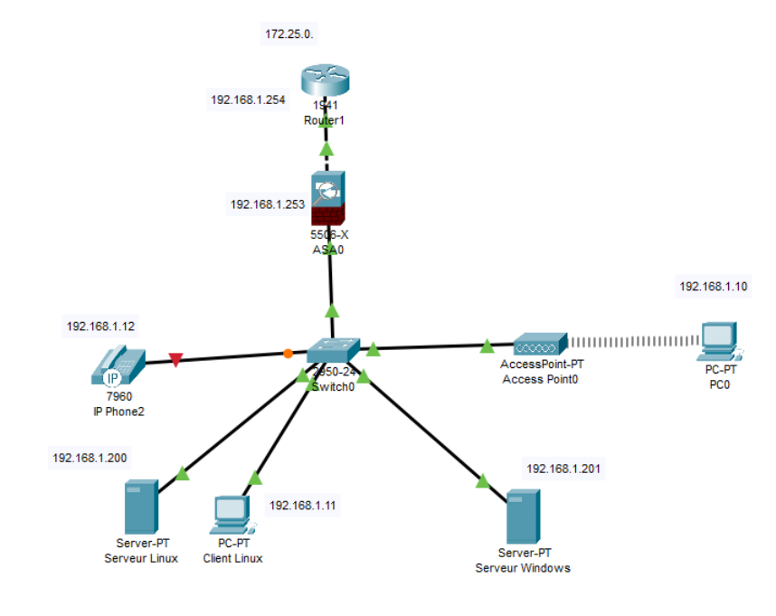
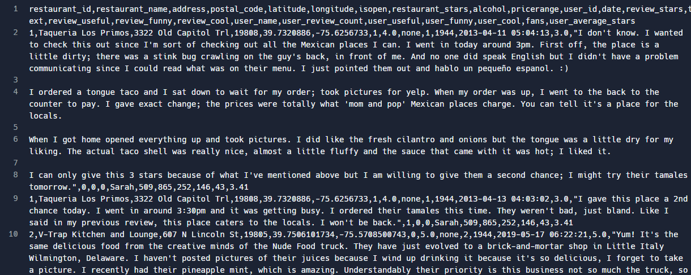
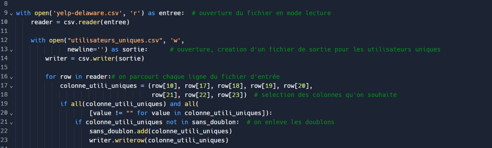

Projets
SAE24 - Projet Intégratif
Cette SAE a pour objectif d'utiliser l'ensemble des compétences techniques acquises lors du BUT1 dans la mise en place d'un réseau fonctionnel pour une petite entreprise.
Ce projet est réalisé en groupe de cinq sous la direction d'un enseignant.
Dans un premier lieu, nous avons rédigé un document contenant l'ensemble des besoins de l'entreprise ainsi que les solutions techniques.
Ci-dessous, un schéma du réseau avec les équipements minimum que nous devons mettre en place pour répondre aux besoins de l'entreprise.

Par la suite, nous devons réaliser ce projet à l'aide de quatre ordinateurs, des serveurs (DHCP, DNS, web), un routeur, un switch, un point d'accès wifi ainsi qu'un pare-feu. Cet ensemble d'équipements nous permet de mettre en place ce réseau d'entreprise fonctionnel, tout en garantissant une fiabilité et sécurité élevées.
SAE23 - Mettre en place une solution informatique pour l’entreprise
L'objectif de cette SAE est créer en Full Stack une application de support informatique pour l'université. Il faut qu’un utilisateur puisse créer un ticket de support puis suivre l’avancement du traitement de son ticket. L’administrateur peut lui consulter les tickets, établir des ordres de priorité et les affecter aux techniciens. Ce projet a été réalisé seul (sous la direction d'un enseignant) et en grande partie à l'aide du langage JavaScript. Il faut tout d'abord réaliser la partie Frontend permettant un affichage côté client comme le montre l'image ci-dessous où l'on peut également apercevoir un ticket créé pour un problème d'imprimante.

Ensuite, j'ai programmé la partie Backend et j'ai créé une base de données permettant de stocker les tickets avec MongoDB. J'ai également mis en place un serveur à l'aide d'Express. La difficulté principale ici résidait dans l'optimisation du code JavaScript nécessitant la création de plusieurs dossiers et fichiers reliés entre eux. Cela m'a permis d'apprendre comment mettre en place une application en Full Stack en utilisant des moyens d'optimisation courament utilisés dans le monde de l'entreprise pour rendre le code plus compréhensible.
Ci-dessous un extrait de code que j'ai écrit pour appeler des fonctions JavaScript présentes dans d'autres fichiers à des fins d'optimisation.

Je suis ainsi parvenu à rendre mon application fonctionnelle. Un utilisateur peut créer, supprimer et modifier ses tickets. L'administrateur peut lui avoir accès aux tickets afin de répondre à la demande.
SAE21 - Construire un réseau informatique pour une petite structure
Dans cette SAE, l'objectif final est d'être capable de concevoir un réseau informatique moderne. Premièrement, de façon autonome, nous avons appris à travers Packet Tracer la configuration d'un réseau sous l'adressage IPv6, le fonctionnement des protocoles TCP et UDP, ainsi que le système IPTABLES.
Ci-dessous un exemple de topologie réseau que nous avons dû configurer avec IPv6.
Par la suite, nous avons utilisé ces connaissances théoriques lors de travaux pratiques en binôme pour les appliquer dans un réseau réel. Nous avons de plus appris à configurer des serveurs (notamment DHCP et DNS) et des clients (SSH et FTP).
L'ensemble de ces compétences couplé à un savoir théorique plus approfondi grâce à d'autres projets de réseau, nous a permis de concevoir des réseaux similaires à la topologie ci-dessous.

J'ai finalement réussi à configurer ce réseau et à le rendre fonctionnel. J'ai pu m'en assurer grâce à des tests de fonctionnement dont des ping et des captures de données à l'aide du logiciel Wireshark.
Analyse de données avec Python - Licence MIASHS 2022-2023
Dans le cadre de ma première année dans l'enseignement supérieur avant de rejoindre le BUT RT, l'un des projets phares du deuxième semestre était l'analyse d'un grand nombre de données avec le langage Python sans bibliothèque. Ce projet se déroulait par groupe de trois et s'étendait sur une grande partie du semestre.
Les données à traiter étaient des avis clients concernant des restaurants aux États-Unis, fournies au format CSV. Ci-dessous, un aperçu des données montre le nom des colonnes dans la première ligne, séparées par des virgules.

L'objectif est de créer des fonctions en langage Python pour transformer ces données en un format lisible et manipulable, et réaliser des projections, sélections et calculs sur ces données. La tâche fut difficile car les données comportaient de nombreuses anomalies et des caractères spéciaux qui perturbaient les séparateurs. Cependant, j'ai joué un rôle moteur au sein de mon groupe en apportant mon aide à mes camarades qui rencontraient quelques difficultés avec Python. La phase de test qui a suivi a également été exigeante, mais nous avons réussi à mener le projet à bien dans les délais impartis, et recevoir les compliments de notre professeur.
Voici un extrait du début du code qui permet de créer un fichier contenant uniquement des informations sur les personnes ayant émis des avis et d'éliminer les doublons (car certaines ont publié plusieurs avis).

Le projet a été extrêmement bénéfique pour moi, car il m'a permis de développer considérablement mes compétences en langage Python. En travaillant en groupe, nous étions tenus d'expliquer nos travaux aux autres, renforçant ainsi notre capacité à articuler nos idées de manière claire et à collaborer efficacement.